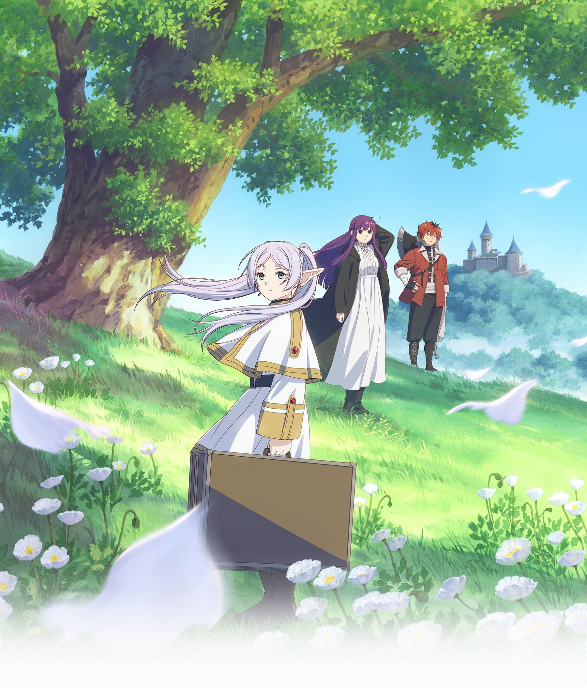
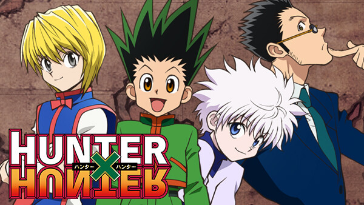

葬送のフリーレン

公式
勇者とそのパーティによって魔王が倒された“その後”の世界を舞台に、
勇者と共に魔王を打倒した千年以上生きる魔法使い・フリーレンと、
彼女が新たに出会う人々の旅路が描かれていく。
BLEACH
公式
霊感が強い高校生・黒崎一護は、悪霊退治に来た死神・朽木ルキアと出会う。
HUNTER✖HUNTER

公式
主人公の少年・ゴン＝フリークスがまだ見ぬ父親のジンと会うため、父の職業であったハンターとなり、仲間達との絆を深めながら成長する様を描いた冒険活劇。
ジョジョの奇妙な冒険
公式
舞台は2001年のイタリア、「ジョルノ・ジョバァーナ」（ジョジョ）が、ギャング団「パッショーネ」で憧れのギャングスターへと登りつめて行く姿と、彼の仲間との逃避行を描いた群像劇。
ONE PIECE
公式
海賊王を夢見る少年モンキー・D・ルフィを主人公とする、「ひとつなぎの大秘宝（ワンピース）」を巡る海洋冒険ロマン。
男子高校生の日常
公式
○×県立真田北高校」（男子校）に通う男子高校生たちの、日常の中の笑いを描くギャグ漫画。